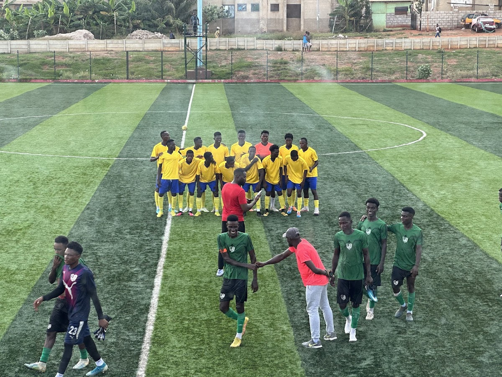

2025–26 season reference
10th
A club built on imagination, discipline and forward movement. Vision Football Club is creating a platform for talent to grow, compete and represent with pride.
From Eleven Strangers to Vision Football Club, the journey has always been about seeing further and building something with purpose.

Tema, Ghana · Capacity 2,500, including 1,000 seated.
Venue image: Stadianity venue listing · view source ↗
Founded in 1999 as Eleven Strangers, the club became Vision Football Club in 2001. In the years that followed, Vision developed through regional competition, youth development and a growing international outlook.
The club’s identity is forward-looking by design: ambitious in performance, grounded in its people and committed to giving young players a genuine platform.
Founded as Eleven Strangers.
The club is renamed Vision Football Club.
Registered in Division Three, absorbing graduated U-17 players.
League winners of the Greater Accra Regional Second Division – Zone 4 in consecutive seasons.
Competing in the Ghana Premier League with three youth teams supporting the next generation.
The Vision pathway is designed to connect first-team ambition with long-term player development and community.
Competing at Ghana’s highest domestic level with the standards, focus and belief required to keep moving forward.
The club’s Regional Division Two pathway, creating a competitive bridge for developing players.
Youth teams supporting early development, identity and the next generation of Vision players.
A club’s standards are carried by its people. The following management details are taken from the supplied club reference.
Club leadership
Club leadership
First-team coaching
Club founder
Former player names supplied in the current club reference information. This is an editorial list, not a live squad or statistical database.
For current fixtures, club announcements and official updates, visit the club’s published website.